Лицейские классы
Айдентика для проекта «Лицейские классы» НИУ ВШЭ. Учебные курсы для старшеклассников в едином приятном визуале. Создание 3D-элементы, верстка полиграфии и объяснение что к чему
5 стран
2022-2023
Задача
Разработать фирменный стиль для дочернего проекта НИУ ВШЭ «Лицейские классы».
Цель — создать визуальную систему для образовательной программы, готовящей иностранных старшеклассников к поступлению в университет по четырём направлениям. Работа включала разработку айдентики с нуля, опираясь на брендбук ВШЭ, создание 3D-элементов, оформление печатных и digital-материалов, а также подготовку к передаче проекта другим подрядчикам.
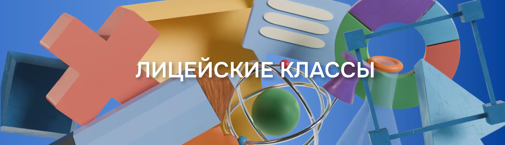
Концепция
Хотелось совместить строгий стиль ВШЭ и понятные образы для школьников 16–18 лет и их родителей. Основой айдентики стали 3D-объекты в цветах основного брендбука ВШЭ, разделённые по четырём направлениям проекта. Каждый профиль получил свои характерные формы и визуальные акценты. Система оставалась гибкой: ее легко масштабировать и адаптировать, сохраняя единый стиль.
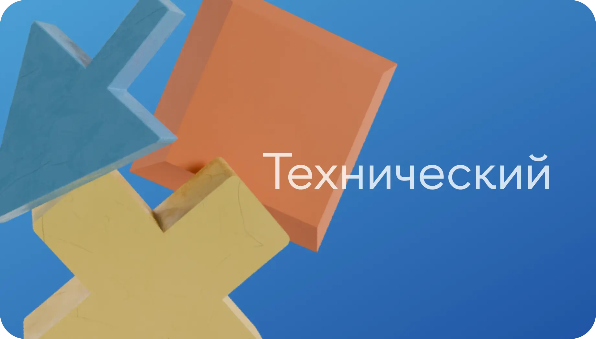
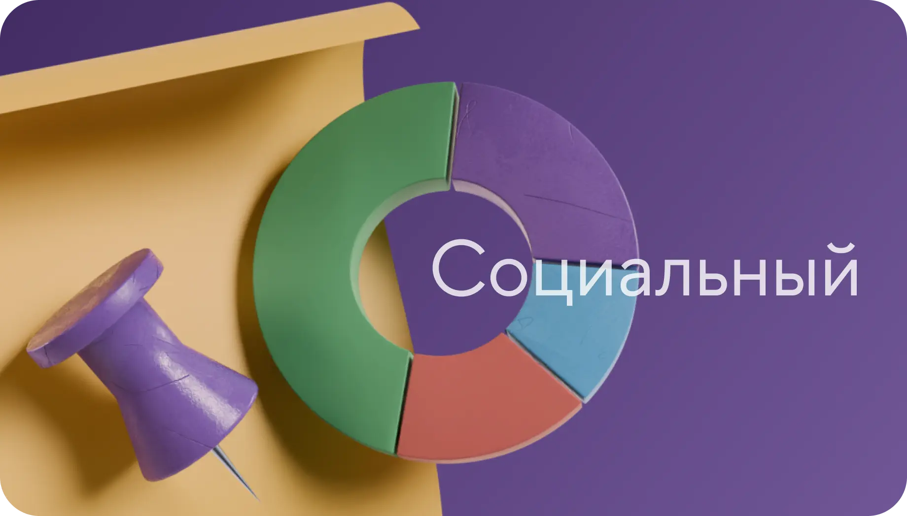
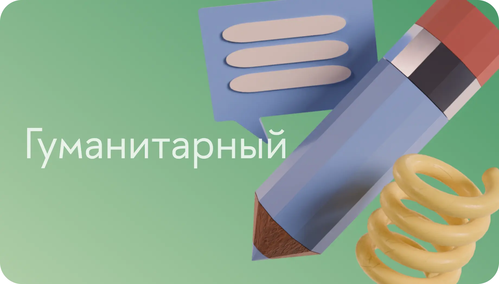
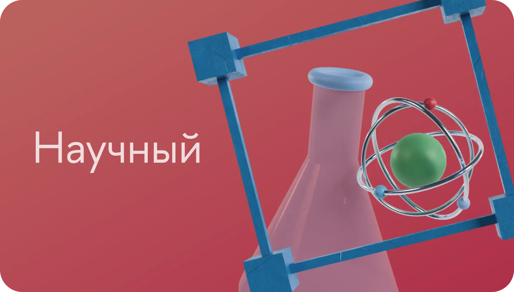
Все модели созданы с нуля в Blender, экспортированы и систематизированы по папкам для удобной работы команды. Подготовлены рендеры как отдельных элементов, так и их групповых композиций для разных форматов носителей.
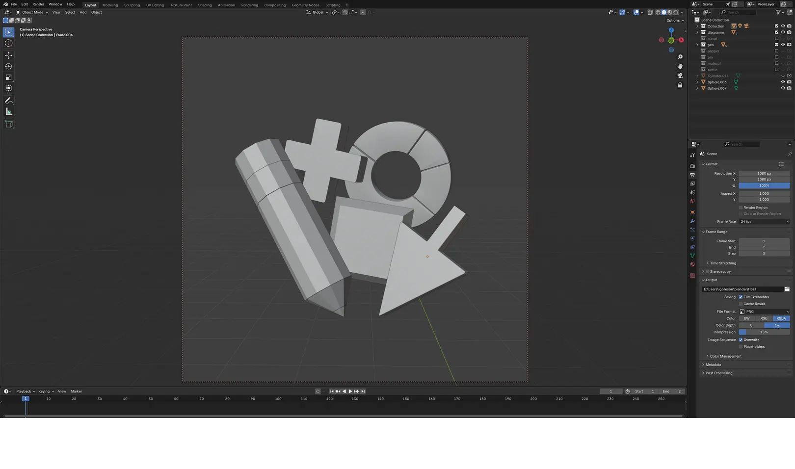
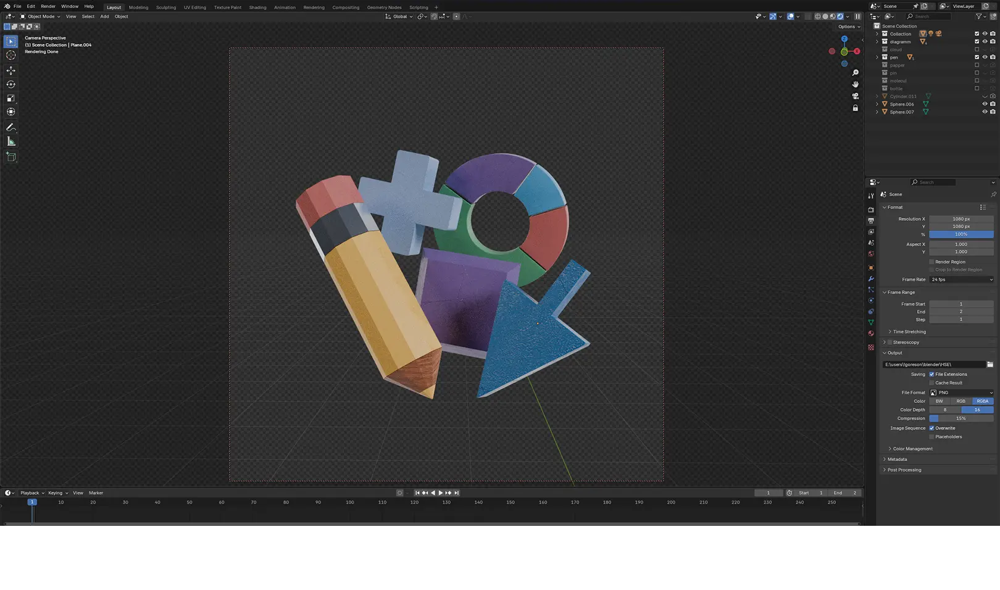
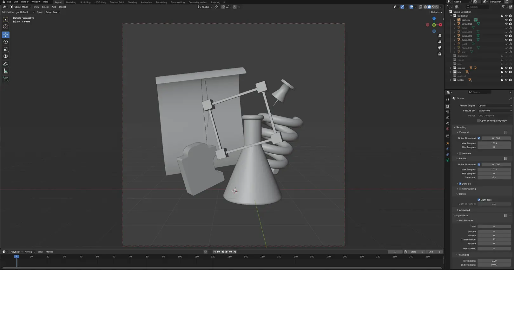
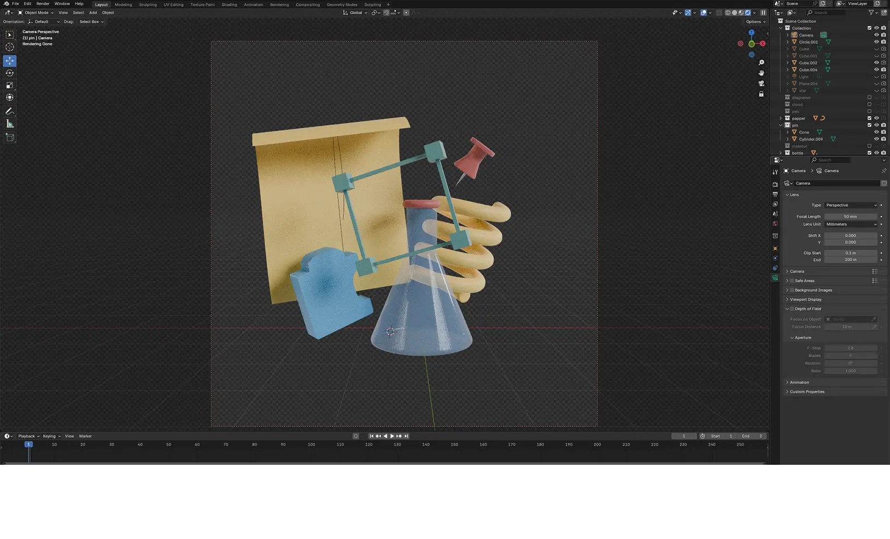
Каждое направление проекта получило не только свою цветовую схему, но и уникальный визуальный набор — формы, фактуры и композиции отражают специфику профиля. Это позволило быстро собирать материалы с чёткой ассоциацией к нужной теме.
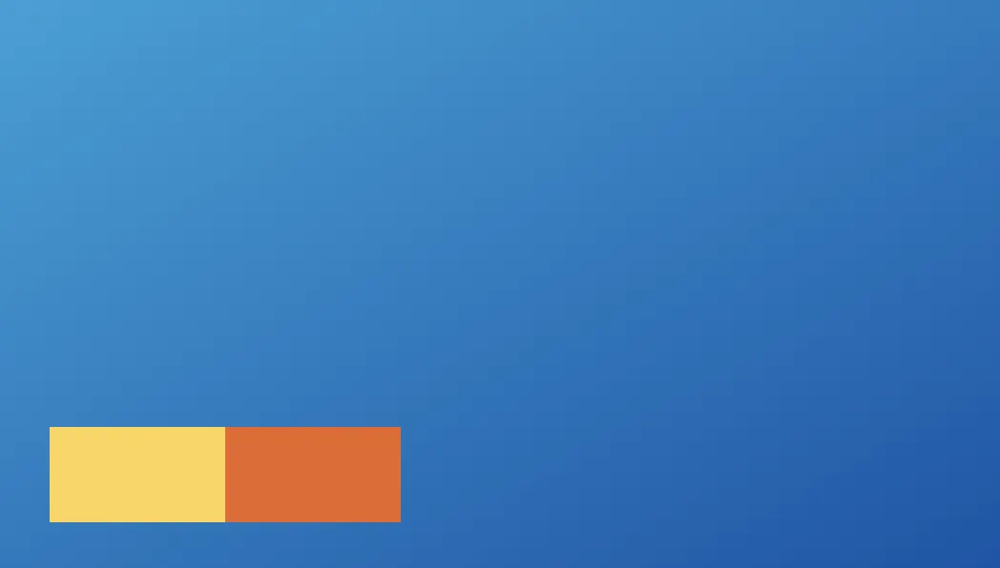
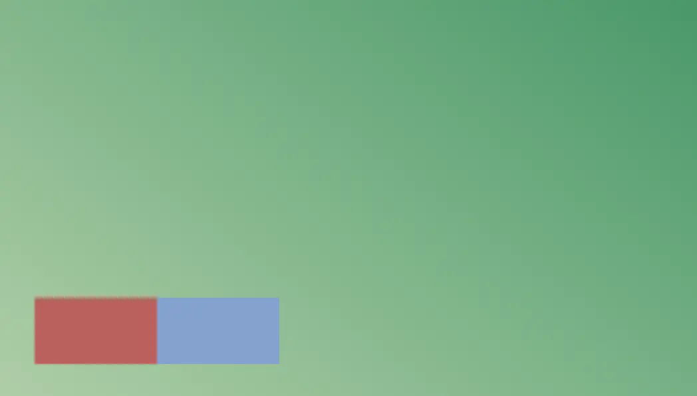
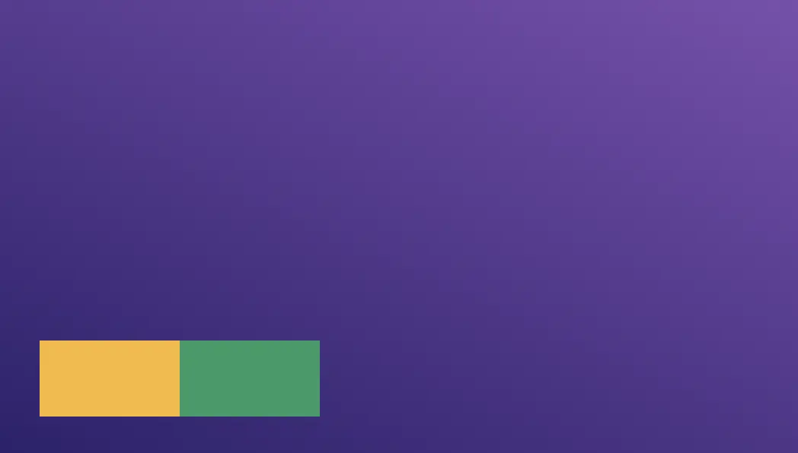
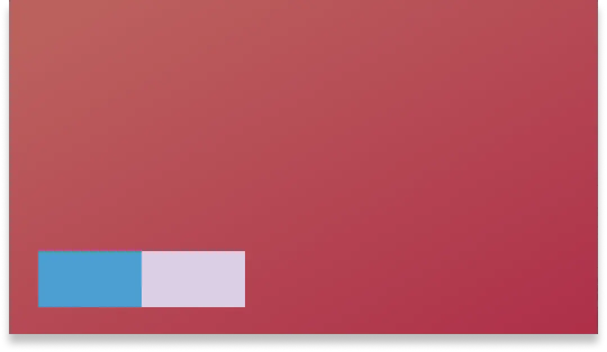
Каждое направление проекта получило не только свою цветовую схему, но и уникальный визуальный набор — формы, фактуры и композиции отражают специфику профиля. Это позволило быстро собирать материалы с чёткой ассоциацией к нужной теме.
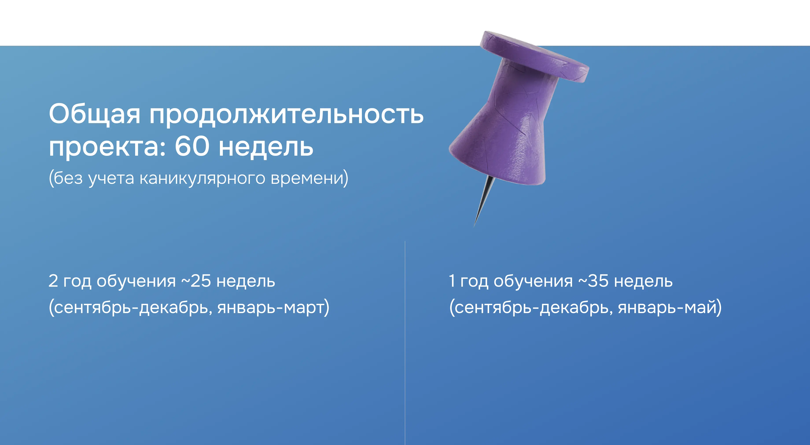
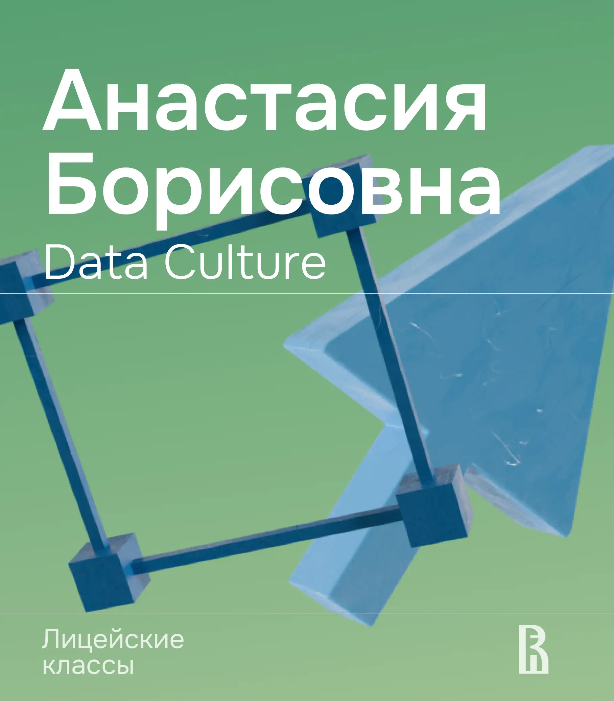
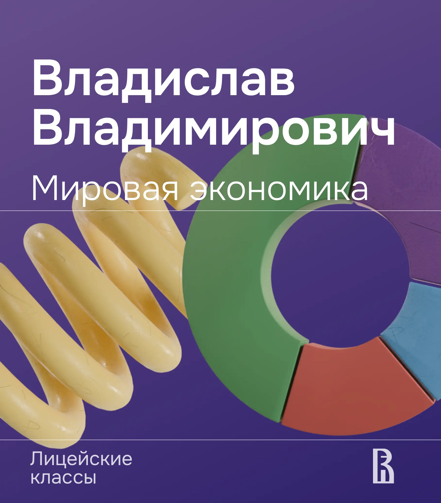
Представленный вариант остался на уровне проекта.